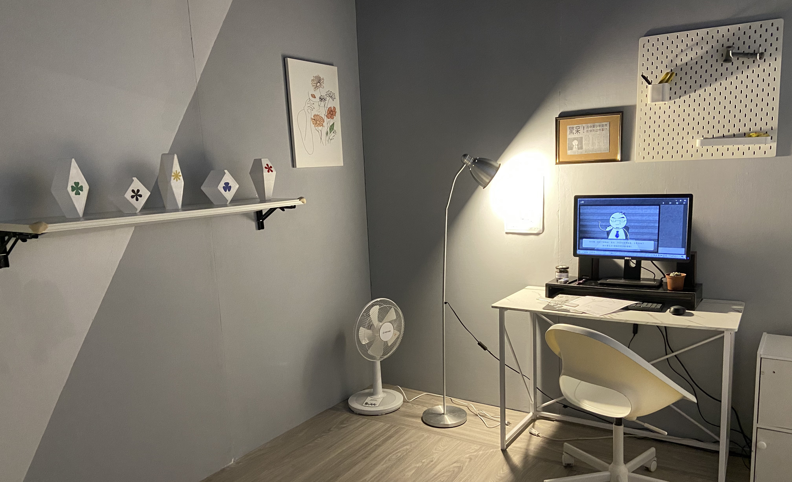
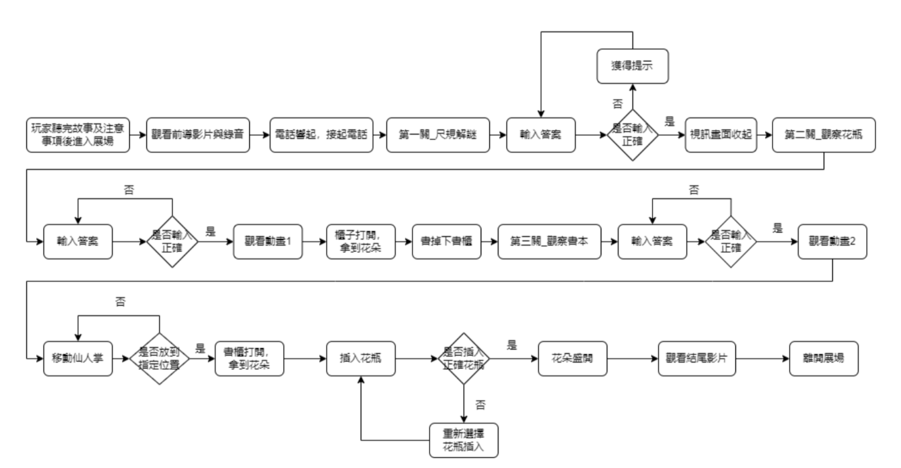
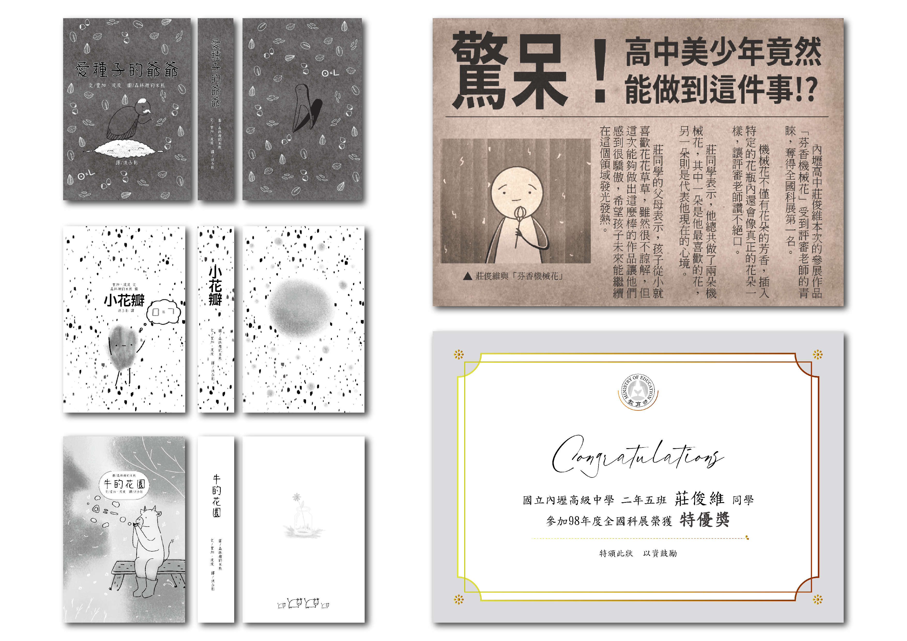
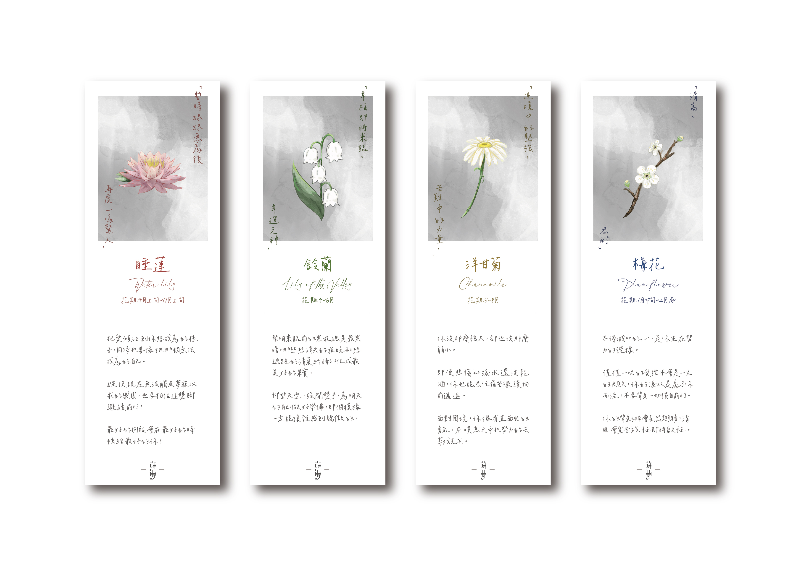

蒔夢是以「花朵」與「夢想」為主軸的互動密室逃脫。
玩家扮演的是一名位叫做莊俊維的機械工程師，每天都要受到主管責罵、熬夜加班。在連續加班一個月後的今天，俊維拖著疲憊的身體回到了家。他開始懷疑這是不是他想要的生活。玩家的目標是要在這半夢半醒的20分鐘內找回最初的夢想。


故事
莊俊維從小就喜歡花草，但父母認為那個沒有前途。後來俊維在高中時參加全國科展得了第一名， 主題是與他最喜歡的東西做結合的機械花，父母更加認為他應該走工程師的路。 就在30歲的某天晚上，他疲累的回到家後做了一個夢，夢中他回想起自己曾經的夢想是開一間花店， 也認為現在有足夠的能力去實踐。從夢中醒來後，俊維盯著窗邊的盆栽陷入思考...
黑白、手繪風格
以黑白代表俊維過著枯燥乏味的人生，色彩豐富的地方是解謎的提示或是他重視的事物。 手繪的風格則代表這是俊維想像的空間，只有在夢裡才能逃避現實的追捕。
製作
我負責Unity製作、展場物品設計、關卡設計 、周邊設計、動畫製作。
Unity製作
分成兩個部分，第一個是操控影片及錄音的播放，也配合Arduino控制開關燈。 第二個是讓玩家透過操作電腦來進行解謎，當玩家成功時也配合Arduino開啟櫃子。
動畫製作
使用AE製作，讓玩家在黑暗中觀看的投影劇情。另外unity中的手繪動畫我負責補間的部分，為了讓玩家不要閱讀過多的文字而製作。

展場物品設計
為了讓展場的的物品呈現黑白、手繪風格，因此書本及照片都要繪製，也要構想如何將線索藏在圖中。

周邊設計
香氛書籤:共四款，每款上方為花朵的花語，下方則為勵志小語，希望傳達正能量給所有拿到的人。